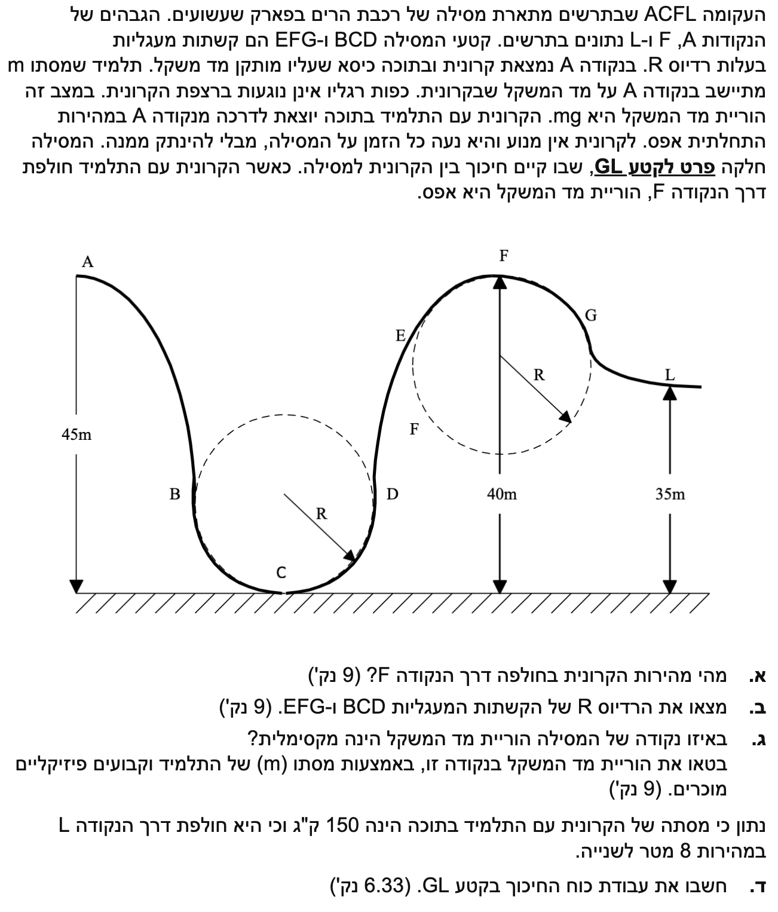
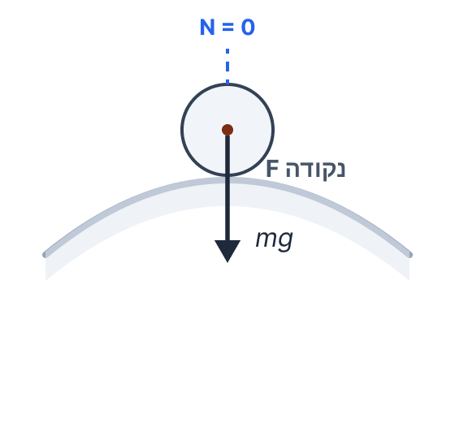
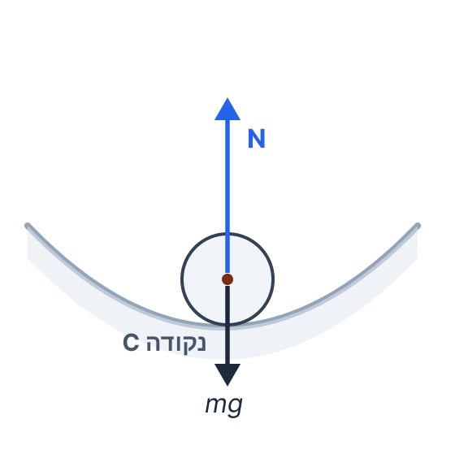

פתרון מודרך בפיזיקה - רכבת הרים ותנועה מעגלית
שאלה על בסיס תש"ס - אורט ביאליק
פתרון מלא, מוסבר וצעד-אחר-צעד לשאלה המשלבת שימור אנרגיה, תנועה מעגלית, קריאת מד משקל ועבודת כוח חיכוך.
עודכן:
--- --:--:--
מבט כללי על השאלה
השאלה הזאת נראית ארוכה, אבל הרעיון המרכזי שלה פשוט מאוד: כל עוד אין חיכוך ואין כוחות לא משמרים אחרים שעושים עבודה, האנרגיה המכנית נשמרת ולכן אפשר לחשב מהירויות לפי גבהים בלבד. ברגע שיש עקומה מעגלית, נשלב בזה גם את החוק השני של ניוטון בכיוון הרדיאלי.
לכן סדר העבודה שלנו יהיה קבוע: תחילה נחשב מהירות בעזרת אנרגיה, אחר כך נשתמש בקריאת מד המשקל כדי למצוא את הרדיוס, לאחר מכן נבדוק באיזו נקודה הכוח הנורמלי הוא הגדול ביותר, ולבסוף נחשב את עבודת החיכוך בקטע שבו החיכוך אכן קיים.
זה בדיוק סוג השאלות שבו כדאי להפריד בין שני כלים: אנרגיה כדי למצוא מהירות, ודינמיקה מעגלית כדי לקשור בין המהירות לבין קריאת מד המשקל.

[תמונת השאלה המקורית]
לא נמצאה תמונה בשם question-image.png באותה תיקייה.
מה נתון:
- הקרונית יוצאת מנקודה \( A \) ממנוחה, כלומר \( v_A = 0 \).
- בין \( A \) לבין \( F \) המסילה חלקה, לכן אין חיכוך בקטע זה.
- גובה נקודה \( A \) הוא \( 45\text{ m} \), וגובה נקודה \( F \) הוא \( 40\text{ m} \).
- תאוצת הכובד היא תמיד חיובית: \( g = 10\text{ m/s}^2 \).
מה מחפשים:
את גודל מהירות הקרונית בעת שהיא חולפת דרך נקודה \( F \).
נוסחאות ועקרונות בשימוש:
\( E_k = \frac{1}{2}mv^2 \)
\( U_g = mgh \)
עיקרון: כאשר אין חיכוך ואין כוחות לא משמרים אחרים שעושים עבודה, האנרגיה המכנית נשמרת.
הצבה ופתרון
נבחר את מפלס הקרקע כגובה אפס. מכיוון שבין \( A \) לבין \( F \) אין חיכוך וגם אין כוחות לא משמרים אחרים שעושים עבודה, האנרגיה המכנית בנקודה \( A \) שווה לאנרגיה המכנית בנקודה \( F \).
שלב 1: רושמים את האנרגיה בנקודה A
בנקודה \( A \) הקרונית מתחילה ממנוחה, לכן האנרגיה הקינטית שם שווה לאפס, ונשארת רק אנרגיית גובה.
\[
E_A = U_{g,A} + E_{k,A} = mg \cdot 45 + 0
\]
שלב 2: רושמים את האנרגיה בנקודה F
בנקודה \( F \) יש גם אנרגיית גובה וגם אנרגיה קינטית, כי הקרונית כבר בתנועה.
\[
E_F = U_{g,F} + E_{k,F} = mg \cdot 40 + \frac{1}{2}mv_F^2
\]
שלב 3: משווים ומבודדים את המהירות
כעת נציב את שני הביטויים במשוואת שימור האנרגיה. לאחר מכן נחסר \( 40mg \) משני האגפים ונצמצם במסה \( m \), שמופיעה בכל האיברים.
\[
\begin{aligned}
mg \cdot 45 &= mg \cdot 40 + \frac{1}{2}mv_F^2 \\
mg(45-40) &= \frac{1}{2}mv_F^2 \\
5g &= \frac{1}{2}v_F^2 \\
5 \cdot 10 &= \frac{1}{2}v_F^2 \\
50 &= \frac{1}{2}v_F^2 \\
v_F^2 &= 100 \\
v_F &= 10
\end{aligned}
\]
מהירות הקרונית בנקודה \( F \) היא \( v_F = 10.0\text{ m/s} \).
טיפ מורה:
הקריאה האפסית של מד המשקל בנקודה \( F \) עדיין לא אומרת לנו כאן מהי המהירות. לסעיף א' מספיק להשתמש רק בהפרש הגבהים. הקריאה האפסית תהיה הכלי המרכזי שלנו דווקא בסעיף הבא, כדי לקשור בין המהירות לבין הרדיוס.
מה נתון:
- מהסעיף הקודם: \( v_F = 10.0\text{ m/s} \).
- בנקודה \( F \) הוריית מד המשקל היא אפס, ולכן הכוח הנורמלי על התלמיד שווה לאפס: \( N_F = 0 \).
- הקטע \( EFG \) הוא קשת מעגלית בעלת רדיוס \( R \).
- נבחר ציר רדיאלי חיובי כלפי מרכז המעגל, כלומר כלפי מטה.
מה מחפשים:
את רדיוס הקשתות המעגליות, שנסמנו \( R \).
נוסחאות ועקרונות בשימוש:
\( \Sigma F = ma \)
\( a_r = \frac{v^2}{r} \)
\( w = mg \)
הצבה ופתרון
בנקודה \( F \) התנועה היא מעגלית, ולכן התאוצה מכוונת אל מרכז המעגל. מרכז המעגל נמצא מתחת לנקודה \( F \), לכן גם התאוצה הרדיאלית מכוונת כלפי מטה.
תרשים כוחות של התלמיד בנקודה F

שלב 1: כותבים את החוק השני של ניוטון בכיוון הרדיאלי
מכיוון שמד המשקל מורה אפס, הכוח הנורמלי איננו פועל על התלמיד באותו רגע. לכן הכוח היחיד בכיוון הרדיאלי הוא כוח הכובד.
\[
\Sigma F_r = ma_r
\]
\[
mg = m\frac{v_F^2}{R}
\]
שלב 2: מציבים את המהירות שמצאנו בסעיף א'
כעת נצמצם במסה \( m \), נבודד את \( R \), ואז נציב \( v_F = 10.0\text{ m/s} \).
\[
\begin{aligned}
g &= \frac{v_F^2}{R} \\
R &= \frac{v_F^2}{g} \\
R &= \frac{10.0^2}{10} \\
R &= 10.0
\end{aligned}
\]
רדיוס הקשתות המעגליות הוא \( R = 10.0\text{ m} \).
טיפ מורה:
מד המשקל אינו מודד את כוח הכובד \( mg \), אלא את הכוח הנורמלי \( N \) שהמשטח מפעיל על הגוף. לכן הקריאה שלו יכולה להיות גדולה מ-\( mg \), קטנה ממנו, ולפעמים אפילו אפס. בסעיף הזה הקריאה היא אפס מפני ש-\( N = 0 \), אבל כוח הכובד עצמו עדיין פועל במלואו.
מה נתון:
- מהסעיף הקודם: \( R = 10.0\text{ m} \).
- נקודה \( C \) היא הנקודה הנמוכה ביותר על המסילה המעגלית התחתונה, ולכן גובהה \( 0\text{ m} \).
- עד נקודה \( C \) אין חיכוך, וגם אין כוחות לא משמרים אחרים שעושים עבודה, לכן אפשר להשתמש בשימור אנרגיה.
מה מחפשים:
באיזו נקודה הוריית מד המשקל מקסימלית, ולבטא הורייה זו באמצעות מסת התלמיד (\( m \)) וקבועים.
נוסחאות ועקרונות בשימוש:
\( E_k = \frac{1}{2}mv^2 \)
\( U_g = mgh \)
\( \Sigma F = ma \)
\( a_r = \frac{v^2}{r} \)
הצבה ופתרון
הוריית מד המשקל שווה לכוח הנורמלי (\( N \)) שהכיסא מפעיל על התלמיד. לפני שניגש לחישוב, נבין באיזו נקודה הכוח הזה יהיה הכי גדול.
שלב 1: מצדיקים מדוע דווקא בנקודה C ההורייה מקסימלית
בתנועה מעגלית, הכוח הנורמלי משחק תפקיד כפול: עליו גם להתגבר על הרכיב הרדיאלי של כוח הכובד (המושך החוצה מהמעגל) וגם לספק את הכוח הדרוש ליצירת התאוצה הרדיאלית (כלפי המרכז). בנקודה התחתונה \( C \) מתקבל שילוב של שני "שיאים" שמצריכים כוח נורמלי עצום:
- מהירות מקסימלית: זוהי הנקודה הנמוכה ביותר, ולכן כל אנרגיית הגובה הומרה לאנרגיה קינטית. מהירות גדולה פירושה תאוצה רדיאלית גדולה, ולכן המשטח צריך לייצר כוח רדיאלי חזק במיוחד כלפי המרכז.
- התגברות על משקל מלא: בנקודה תחתית זו, כוח הכובד כולו מכוון ישר החוצה ממרכז המעגל. המשטח (מד המשקל) צריך לשאת את מלוא כוח הכובד (ולא רק רכיב חלקי ממנו), ובנוסף לכך גם לדחוף חזק כלפי מעלה בשביל התאוצה.
לכן, בנקודה \( C \) מתקבל כוח נורמלי מקסימלי: \( N = mg + m\frac{v^2}{R} \).
תרשים כוחות של התלמיד בנקודה C

שלב 2: מחשבים את המהירות בנקודה C
נשתמש בשימור אנרגיה בין נקודה \( A \) לבין נקודה \( C \). הפרש הגבהים הוא \( 45 - 0 = 45\text{ m} \), משום שנקודה \( C \) נמצאת על הקרקע.
\[
\begin{aligned}
mg \cdot 45 &= \frac{1}{2}mv_C^2 \\
45g &= \frac{1}{2}v_C^2 \\
v_C^2 &= 90g
\end{aligned}
\]
נשאיר את הביטוי בצורה של \( v_C^2 \) עם \( g \), כי נזדקק לו בשלב הבא.
שלב 3: מחשבים את הכוח הנורמלי (הוריית מד המשקל) בנקודה C
בנקודה \( C \) מרכז המעגל נמצא מעל המסילה, לכן הכיוון הרדיאלי החיובי הוא כלפי מעלה. משוואת הכוחות בכיוון הרדיאלי:
\[
\Sigma F_r = m a_r
\]
\[
N_C - mg = m\frac{v_C^2}{R}
\]
נציב את \( v_C^2 = 90g \) ואת הרדיוס \( R = 10\text{ m} \):
\[
\begin{aligned}
N_C - mg &= m \cdot \frac{90g}{10.0} \\
N_C - mg &= 9mg \\
N_C &= mg + 9mg \\
N_C &= 10mg
\end{aligned}
\]
הוריית מד המשקל מקסימלית בנקודה \( C \), וערכה הוא \( N_C = 10mg \).
טיפ מורה:
טעות נפוצה בסעיפים מן הסוג הזה היא לבחור את הנקודה שבה המהירות מקסימלית, ומיד להסיק ששם גם הוריית מד המשקל מקסימלית. זה לא תמיד מספיק. כדי לקבוע היכן \( N \) מקסימלי צריך לבדוק בכל נקודה גם את כיוון הכבידה ביחס למרכז המעגל, כלומר איך נראית משוואת הכוחות הרדיאלית באותה נקודה. בתחתית הלולאה שני האפקטים מצטרפים, ולכן דווקא שם הקריאה גדולה ביותר.
מה נתון:
- מסת הקרונית עם התלמיד היא \( M = 150\text{ kg} \). אין צורך בהמרת יחידות, כי הנתון כבר ביחידות תקניות.
- הקרונית חולפת דרך נקודה \( L \) במהירות \( v_L = 8.00\text{ m/s} \).
- חיכוך קיים רק בקטע \( GL \).
- גובה נקודה \( L \) הוא \( 35.0\text{ m} \).
- גובה נקודה \( F \) הוא \( 40.0\text{ m} \), ומהסעיף הקודם: \( R = 10.0\text{ m} \).
מה מחפשים:
את עבודת כוח החיכוך בקטע \( GL \).
נוסחאות ועקרונות בשימוש:
\( E_k = \frac{1}{2}Mv^2 \)
\( U_g = Mgh \)
\( W_{nc} = \Delta E_m \)
עיקרון: אם אין חיכוך ואין כוחות לא משמרים אחרים שעושים עבודה, האנרגיה המכנית נשמרת. במקרה שלנו, בין \( A \) לבין \( G \) תנאי זה מתקיים, ולכן האנרגיה המכנית נשמרת. בקטע \( GL \) החיכוך הוא הכוח הלא משמר היחיד, ולכן עבודת החיכוך שווה לשינוי באנרגיה המכנית.
הצבה ופתרון
נשתמש בקשר בין עבודת כוחות לא משמרים לבין השינוי באנרגיה המכנית. החיכוך פועל רק בקטע \( GL \), ולכן עבודת החיכוך בקטע זה שווה לשינוי באנרגיה המכנית מן הרגע שבו הקרונית יצאה מנקודה \( A \) ועד שהיא הגיעה לנקודה \( L \). כדי לנצל זאת בצורה הפשוטה ביותר, נחשב את האנרגיה המכנית ב-\( A \) ואת האנרגיה המכנית ב-\( L \).
שלב 1: מחשבים את האנרגיה המכנית בהתחלה (נקודה A)
בין נקודה \( A \) לבין נקודה \( G \) אין חיכוך ואין כוחות לא משמרים אחרים שעושים עבודה, ולכן האנרגיה המכנית נשמרת בקטע זה. לכן מותר לנו לקבוע ש-\( E_G = E_A \). נוח במיוחד לחשב את האנרגיה בנקודה \( A \), כי שם הקרונית מתחילה ממנוחה ויש רק אנרגיית גובה.
\[
\begin{aligned}
E_A &= Mgh_A + E_{k,A} \\
E_A &= 150 \cdot 10 \cdot 45 + 0 \\
E_A &= 67500\text{ J}
\end{aligned}
\]
מכאן נובע מיד שגם \( E_G = 67500\text{ J} \), אף שלא היינו צריכים לחשב בנפרד את הגובה או את המהירות בנקודה \( G \).
שלב 2: מחשבים את האנרגיה המכנית בנקודה L
בנקודה \( L \) יש לקרונית גם מהירות (\( 8.00\text{ m/s} \)) וגם גובה (\( 35.0\text{ m} \)).
\[
\begin{aligned}
E_L &= \frac{1}{2}Mv_L^2 + Mgh_L \\
&= \frac{1}{2} \cdot 150 \cdot 8.00^2 + 150 \cdot 10 \cdot 35 \\
&= 4800 + 52500 \\
&= 57300\text{ J}
\end{aligned}
\]
שלב 3: מפעילים את הקשר בין עבודה לשינוי באנרגיה
כוח החיכוך הוא הכוח הלא משמר היחיד שעושה עבודה, והוא פועל רק בקטע \( GL \). לכן עבודת החיכוך בקטע \( GL \) שווה לשינוי באנרגיה המכנית בין תחילת התנועה בנקודה \( A \) לבין המצב בנקודה \( L \).
\[
\begin{aligned}
W_f &= \Delta E_m = E_L - E_A \\
W_f &= 57300 - 67500 \\
W_f &= -10200\text{ J}
\end{aligned}
\]
עבודת כוח החיכוך בקטע \( GL \) היא \( W_f = -1.02 \times 10^4\text{ J} \).
איך זה יכול להיות ש...
התקבלה עבודה שלילית? זה דווקא מה שצריך לקרות. חיכוך פועל נגד כיוון התנועה ולכן הוא גורע אנרגיה מכנית מן המערכת. הסימן השלילי הוא לא קישוט אלגברי; הוא אומר שהחיכוך "לקח" אנרגיה מן הקרונית והתלמיד.